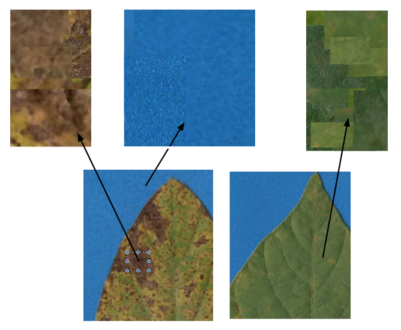
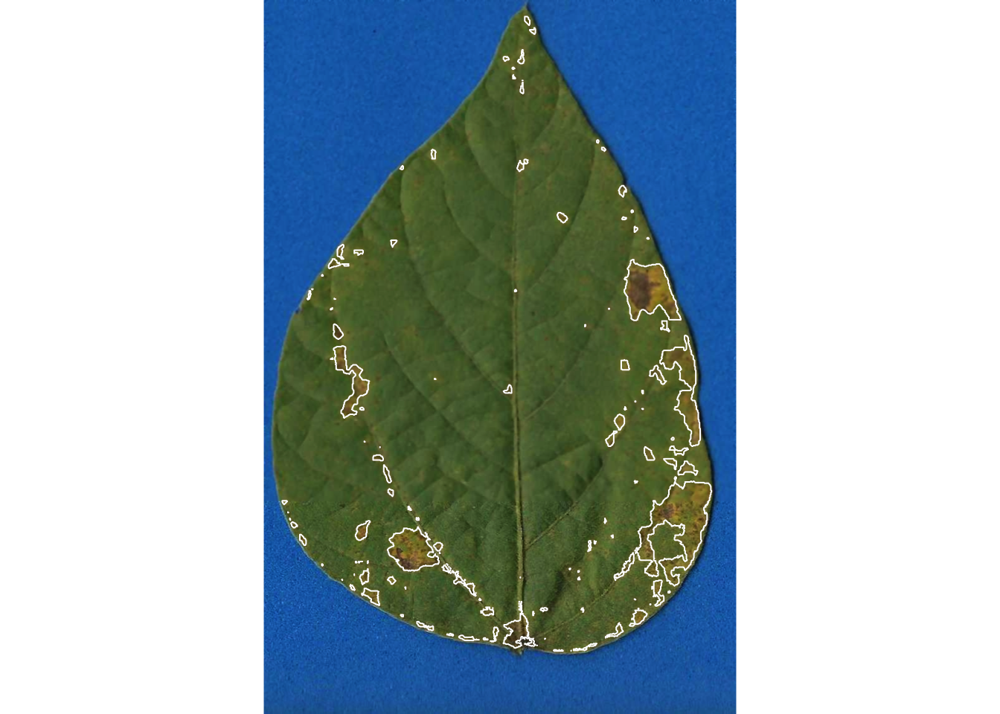
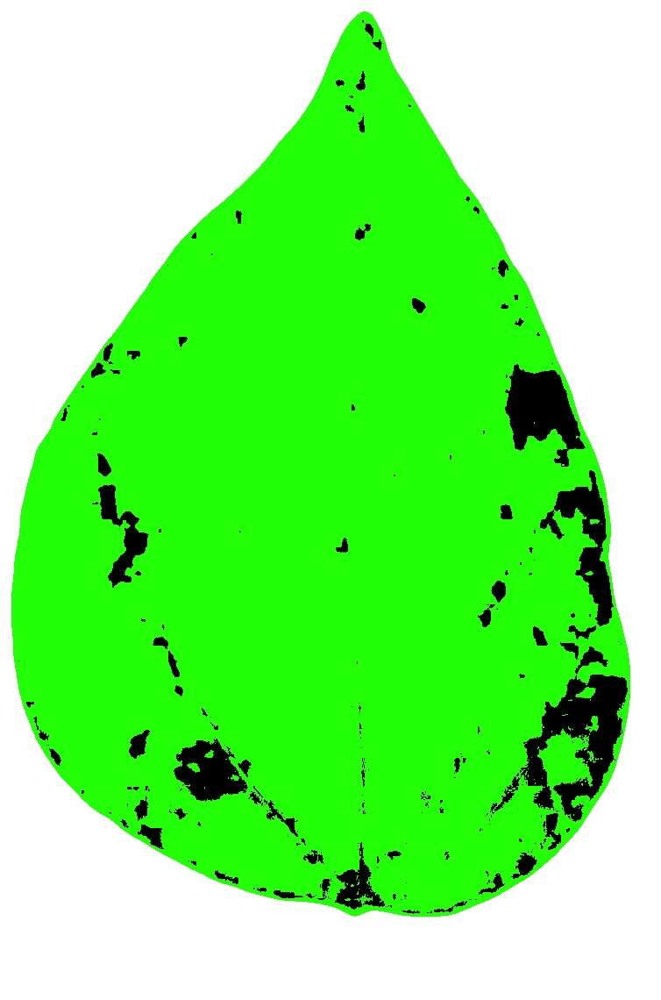

library(pliman)
h <- image_import("imgs/sbr_h.png")
s <- image_import("imgs/sbr_s.png")
b <- image_import("imgs/sbr_b.png")4 Measuring severity
This is a work in progress that is currently undergoing heavy technical editing and copy-editing
This chapter is adapted from a post published in Open Plant Pathology
4.1 The actual severity
Among the different ways to express plant disease severity, the percent area affected (symptomatic) by the disease is one of the most common especially when dealing with diseases that affect leaves. To evaluate whether the visual estimates of plant disease severity are sufficiently accurate (as seen in the previous chapter), one needs the actual severity values. These are also needed when preparing standard area diagrams (SADs) which are diagrammatic representations of severity values used as an aid prior or during the visual assessment to standardize and produce more accurate results across different raters (Del Ponte et al. 2017).
The actual severity values are usually approximated using image analysis where each pixel of the image is labeled according to three different classes:
- Diseased (or symptomatic)
- Non-diseased (or healthy)
- Background (the non-plant portion of the image)
The ratio between the non diseased and diseased area of the unit (e.g. a fraction of the whole leaf image) gives the proportion of diseased area or the percent area affected (when multiplied by 100). Several different proprietary or open-source software has been used by researchers to determine the actual severity according a review on standard area diagrams (Del Ponte et al. 2017).
Here, we will use the measure_disease function of the pliman (Plant IMage ANanalysis) (Olivoto 2022) R package to determine the actual severity values. The package was compared with other software for determining plant disease severity on five different plant diseases and showed to produce concordant results for most of the cases (Olivoto et al. 2022). The workflow is based on two main steps: 1) preparing the image palettes that define each class of the image; and 2) run the function that will classify each pixel of the images according to the colors of the palettes.
4.2 Defining color palettes
The most critical is the initial step, when the user needs to correctly define the color palettes. In pliman the palettes are actually separate images representing each of three classes named background (b), symptomatic (s) and healthy (h).
The reference image palettes can be made simply by manually sampling small areas of the image and producing a composite image. Of course, the results may vary depending on how these areas are chosen. A work on the validation of the pliman to determine disease severity showed the effect of different palettes prepared independently by three researchers (Olivoto et al. 2022). The observation of the processed masks during the calibration of the palettes is important to create reference palettes that are most representative of the respective class.
Here, I cut and pasted several sections of images representative of each class from a few leaves into a Google slide. Once the image palette was ready, I exported each one as a separate image PNG file (JPG also works). These were named: sbr_b.png, sbr_h.png and sbr_s.png.

Now that we have the image palettes, we can start by importing the image palettes into the environment for further analysis. Let’s create an image object for each palette named h (healthy), s (symptoms) and b (background).
We can visualize the imported images using the image_combine() function.
image_combine(h, s, b, ncol =3)
4.3 Measuring severity
4.3.1 Single image
To determine severity in a single image (img46.png), the image file needs to be loaded and assigned to an object using the same image_import() function used to load the palettes for each of the predefined classes. We can then visualize the image, again using image_combine().
img <- image_import("imgs/originals/img46.png")
image_combine(img)
Now the fun begins with the measure_disease() function to determine severity. Four arguments are needed, the one representing the target image and each of the three images of the color palettes. As the author of the package says “pliman will take care of all details!”
set.seed(123)
measure_disease(
img = img,
img_healthy = h,
img_symptoms = s,
img_background = b,
show_image = TRUE
)
$severity
healthy symptomatic
1 92.68302 7.316983
$shape
NULL
$statistics
NULL
attr(,"class")
[1] "plm_disease"4.3.2 Multiple images
That was fun, but usually we don’t have a single image to process but several. It would take a longer time to process each one using the above procedure, thus becoming tedious.
To automate the process, pliman offers a batch processing approach. For such, instead of using img argument, one can use img_pattern and define the prefix of names of the images. In addition, we also need to define the folder where the original files are located.
If the users wants to save the processed masks, the save_image argument needs to be set to TRUE and the directory where the images will be saved also should be informed. Check below how to process 10 images of soybean rust symptoms. The outcome is a list object with the measures of the percent healthy and percent symptomatic area for each leaf in the severity object.
pliman <- measure_disease(
pattern = "img",
dir_original = "imgs/originals" ,
dir_processed = "imgs/processed",
save_image = TRUE,
img_healthy = h,
img_symptoms = s,
img_background = b,
show_image = FALSE,
col_leaf = "green", #leaf color
col_lesions = "red", #lesion color
col_background = "black", #background color
show_original = FALSE #do not show original
)Processing image img11 |==== | 10% 00:00:00 Processing image img35 |======== | 20% 00:00:03 Processing image img37 |============ | 30% 00:00:05 Processing image img38 |================ | 40% 00:00:06 Processing image img46 |==================== | 50% 00:00:08 Processing image img5 |========================= | 60% 00:00:11 Processing image img63 |============================= | 70% 00:00:14 Processing image img67 |================================= | 80% 00:00:18 Processing image img70 |===================================== | 90% 00:00:22 Processing image img75 |=========================================| 100% 00:00:25 severity <- pliman$severity
severity img healthy symptomatic
1 img11 70.80072 29.1992835
2 img35 46.96430 53.0357002
3 img37 60.49390 39.5060986
4 img38 79.14737 20.8526306
5 img46 93.15143 6.8485680
6 img5 20.53977 79.4602312
7 img63 97.15698 2.8430190
8 img67 99.83723 0.1627709
9 img70 35.58683 64.4131683
10 img75 93.04517 6.9548329With the argument save_image set to TRUE, the images are all saved in the folder with the standard prefix “proc.”

Let’s have a look at one of the processed images.

4.4 How good are these measurements?
These 10 images were previously processed in QUANT software for measuring severity which is also based on image thresholding . Let’s create a tibble for the image code and respective “actual” severity - assuming QUANT’s measures as reference.
library(tidyverse)
quant <- tribble(
~img, ~actual,
"img5", 75,
"img11", 24,
"img35", 52,
"img37", 38,
"img38", 17,
"img46", 7,
"img63", 2.5,
"img67", 0.25,
"img70", 67,
"img75", 10
)We can now combine the two dataframes and produce a scatter plot relating the two measures.
dat <- left_join(severity, quant)Joining, by = "img"dat %>%
ggplot(aes(actual, symptomatic)) +
geom_point(size = 5, shape = 16, color = "gray50") +
ylim(0, 100) +
xlim(0, 100) +
geom_abline(slope = 1, intercept = 0) +
theme_light() +
labs(x = "Quant",
y = "pliman")The concordance correlation coefficient is a test for agreement between two observers or two methods (see previous chapter). It is an indication of how accurate the pliman measures are compared with a standard. The coefficient is greater than 0.99 (1.0 is perfect concordance), suggesting an excellent agreement!
library(epiR)
ccc <- epi.ccc(dat$actual, dat$symptomatic)
ccc$rho.c est lower upper
1 0.9940941 0.9774812 0.99846064.5 Conclusion
The community of R users may enjoy using pliman as an alternative to proprietary software or other point-and-click open source solutions such as imageJ. The simplicity of the batch processing approach can greatly improve the speed of the assessment and the user can set arguments to run R in parallel for enhanced computational speed.
The most critical step, as I mentioned, is the definition of the reference image palettes. A few preliminary runs may be needed for a few images to check whether the segmentation is being performed correctly, based on visual judgement. This is no different than any other color-threshold based methods when the choices made by the user affect the final result and contribute to variation among assessors. The cons are the same encountered in the direct competitors, which is the necessity to have images obtained at uniform and controlled conditions, especially a contrasting background.